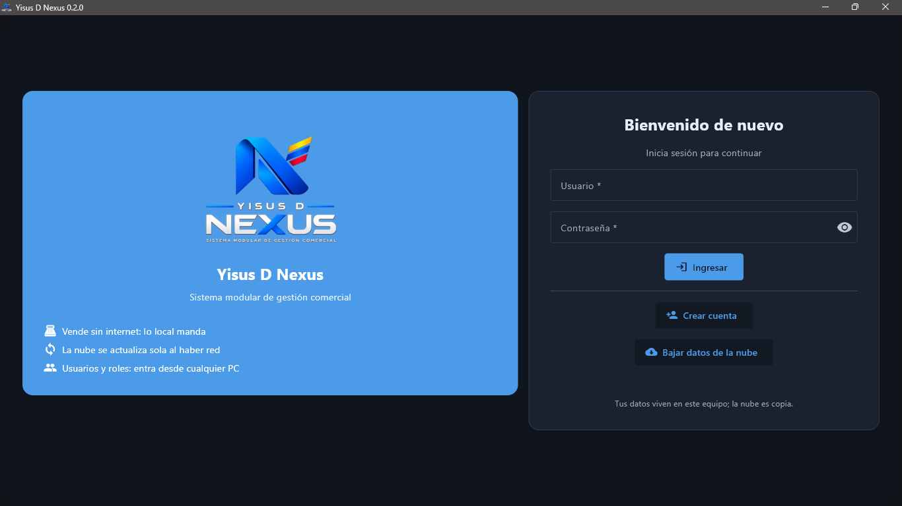
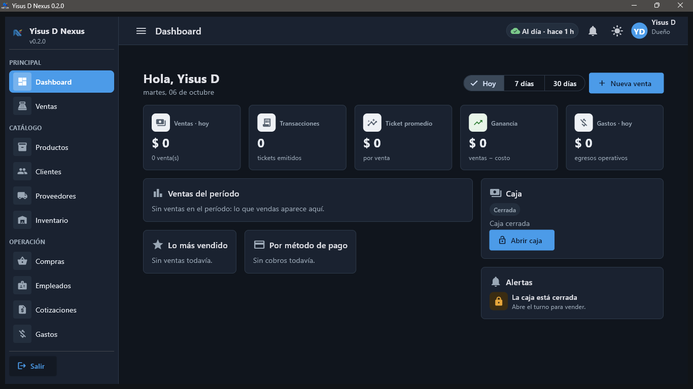
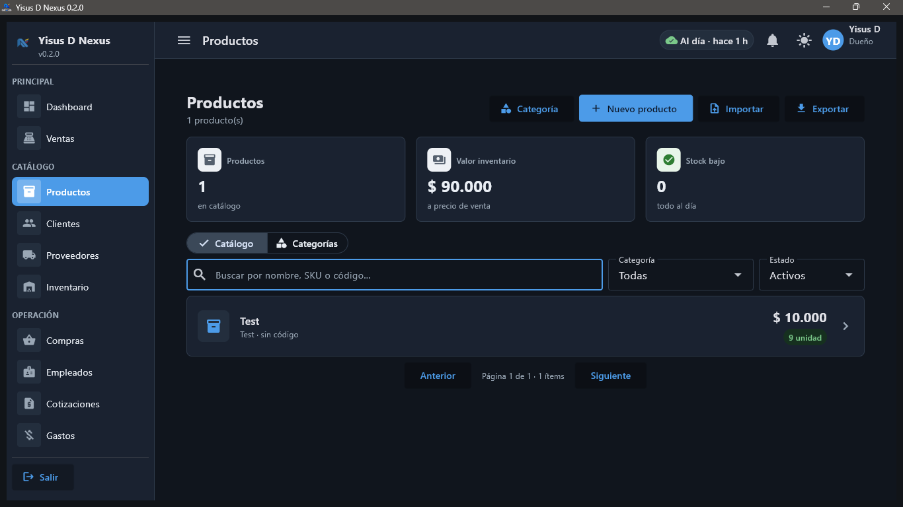
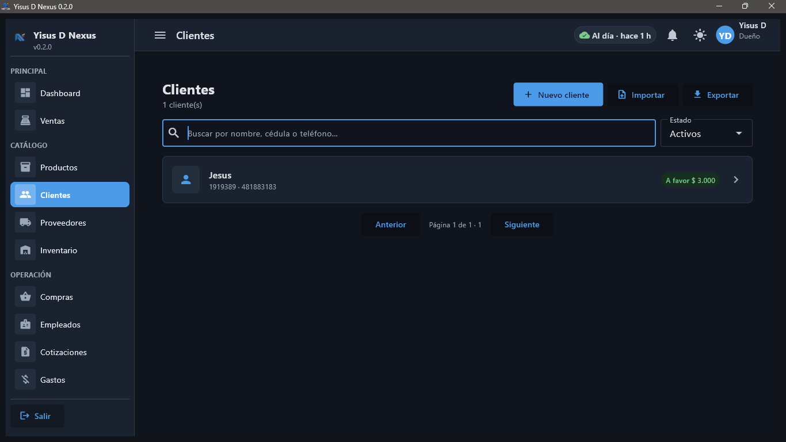

Ventas POS
Buscador + escáner, carrito con descuentos, pagos mixtos y recibo por sucursal (P-000001).
Yisus D Nexus es el punto de venta modular que cobra, controla inventario y caja, maneja el fiado y genera reportes — funcionando al 100 % sin internet. Si la conexión se cae, tu tienda sigue vendiendo.
Demo gratuita para PC · Sin suscripciones · Tus datos se quedan en tu equipo

Miles de negocios de barrio anotan ventas en un cuaderno, pierden la cuenta del fiado y nunca saben cuánto ganaron. Yisus D Nexus nació para eso: un programa de PC, simple de aprender y potente por dentro.
Cada módulo existe y funciona dentro del programa. Se activan o apagan según tu tipo de negocio: una tienda de ropa no ve balanzas, una papelería no ve lo que no usa.
Buscador + escáner, carrito con descuentos, pagos mixtos y recibo por sucursal (P-000001).
Catálogo con variantes, categorías en 2 niveles, costo promedio y códigos de barras.
Stock por sucursal, mermas con motivo, recuento físico y lotes con vencimiento (FEFO).
Cupos, fecha promesa de pago, abonos parciales y top de deudores en el dashboard.
Apertura y cierre con arqueo, movimientos manuales, efectivo, Nequi, Daviplata, tarjeta y transferencia.
Órdenes, recepción con costo promedio, pagos parciales FIFO y devoluciones a proveedor.
Ticket térmico ESC/POS de 48/64 columnas, factura A4 en PDF y nota crédito.
Borrador → enviada → aceptada → convertida a venta en un clic, con precios congelados.
KPIs, lo más vendido y 16 reportes exportables a CSV con filtro por sucursal.
Ficha con cédula enmascarada, vínculo a usuario del sistema y desempeño en ventas.
Plantilla oficial, vista previa con errores por línea y ciclo exportar → editar → importar.
Traspasos entre sedes, control de gastos, devoluciones trazables, respaldos cifrados y sync Supabase.
Diseñado para que cualquier persona del negocio aprenda a cobrar en minutos, con la solidez que el dueño necesita.
La fuente de verdad es tu SQLite local: operas 30 días sin internet sin perder un solo dato. Cuando vuelve la conexión, todo se sincroniza con Supabase.
Login con Argon2id, sesiones locales, roles y permisos por acción (ventas.crear), bloqueo por intentos y auditoría completa.
Tendencias, rotación, productos muertos y antigüedad de stock para decidir qué pedir y qué liquidar.
Lotes con fecha, consumo del que vence primero y panel “Por vencer” con merma en un clic.
Cupo por cliente, fecha promesa de pago con aviso al dueño y paz y salvo automático al quedar al día.
Tickets térmicos, apertura de cajón, escáner de código de barras y balanzas. Vista previa antes de imprimir y reintento sin bloquear la venta.
ZIP con checksum y cifrado opcional, restauración verificada y actualizador por USB o nube con respaldo obligatorio previo.
Capturas reales del programa, tomadas en Windows en modo oscuro.




Ejecuta el instalador Windows y crea tu negocio con el asistente inicial. Sin cuentas externas.
Cárgalos a mano o impórtalos desde Excel con la plantilla oficial y su vista previa.
Escanea, cobra en efectivo o pagos mixtos, imprime el ticket y controla el cambio.
El stock se descuenta solo; el fiado queda con cupo, promesa y abonos.
Arqueo con diferencias auditadas, dashboard del día y reportes en CSV.
Descarga la versión demo para Windows, instálala y vende, registra productos y prueba la caja con datos de ejemplo. Sin internet, sin tarjeta, sin compromiso.
demo y la contraseña Demo1234Sin letra pequeña: elige cómo quieres tu licencia y la activamos el mismo día. Todos los planes incluyen el programa completo.
Pagas una vez y es tuyo para siempre.
Sin gran inversión inicial, siempre al día.
Para negocios con varias sedes.
Los mantenimientos no afectan el funcionamiento del programa: sigues vendiendo con normalidad.
Precios en pesos colombianos (COP) · Escríbenos y te damos tu cotización exacta el mismo día.
Únete a los negocios de barrio que ya dejaron el cuaderno: cobra rápido, cuadra la caja y sabe cuánto ganas cada día.
Respuestas basadas en cómo funciona realmente el programa.
Un punto de venta (POS) modular para PC que gestiona ventas, productos, inventario, caja, clientes con fiado, proveedores, compras, gastos, cotizaciones, reportes y más — todo en un solo programa.
Tiendas de barrio, ropa, papelerías, minimercados, ferreterías y misceláneas. Los módulos se activan según tu tipo de negocio para mostrarte solo lo que usas.
Sí, al 100 %. Es offline-first: tu base de datos local es la fuente de verdad y puedes operar semanas sin conexión. Cuando vuelve internet, los cambios se sincronizan con la nube (Supabase) como espejo y respaldo.
Un PC con Windows. Opcional pero recomendado: lector de código de barras, impresora térmica de tickets (ESC/POS) y cajón de dinero para una experiencia completa de caja.
Sí. Productos y clientes se importan desde Excel con plantilla oficial y vista previa de errores, y los reportes se exportan a CSV. Además hay respaldos ZIP con verificación y cifrado opcional.
Sí. Cada cliente tiene cupo y saldo, las ventas a crédito alimentan su cuenta, puedes registrar abonos parciales y programar fecha promesa de pago con aviso al dueño.
Todavía no. Hoy emite recibos, tickets térmicos, factura en PDF y notas crédito. La facturación electrónica DIAN está en el plan futuro del producto.
Sí, habrá una versión demo descargable para Windows desde la sección “Demo” de esta página. Para licencias y acompañamiento, escríbenos por la sección Contacto.
Escríbenos para la demo, licencias o soporte. Respondemos por WhatsApp y correo.
Lo que necesita tu equipo para correr Yisus D Nexus.